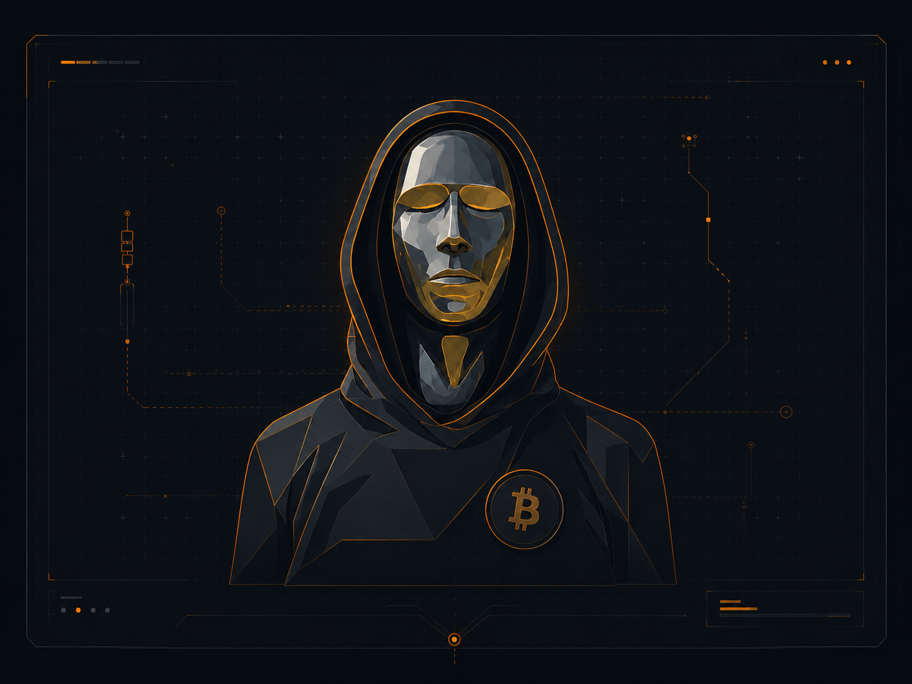
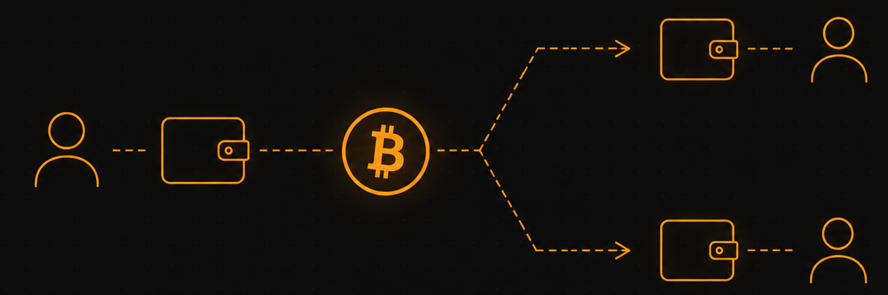
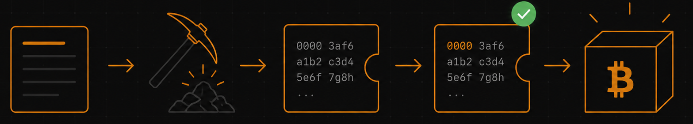

Co je Bitcoin?
Bitcoin je otevřený digitální peněžní systém, který umožňuje převádět hodnotu prostřednictvím internetu přímo mezi jeho účastníky. K provedení platby není nutná banka, karetní společnost ani jiná centrální instituce, která by transakci zprostředkovala a vedla jedinou závaznou evidenci. Namísto toho Bitcoin využívá veřejně známá pravidla, kryptografii a síť nezávislých počítačů, které společně udržují a kontrolují historii uskutečněných převodů [1, 4].
Součástí systému je jeho vlastní měnová jednotka označovaná jako bitcoin, běžně zapisovaná zkratkou BTC nebo symbolem . Bitcoin však není pouze digitální mince. Stejným názvem se označuje také protokol určující pravidla systému a síť počítačů, které podle těchto pravidel komunikují.
Bitcoin není společnost, bankovní služba ani aplikace provozovaná jedním vlastníkem. Jde o otevřený protokol, jehož software může kdokoliv používat, kontrolovat nebo dále rozvíjet. Jednotliví účastníci se mohou k síti připojit nebo ji opustit, aniž by potřebovali povolení centrálního provozovatele.
Vznik Bitcoinu
Základní návrh Bitcoinu zveřejnil v roce 2008 autor vystupující pod pseudonymem Satoshi Nakamoto v dokumentu Bitcoin: A Peer-to-Peer Electronic Cash System. Popsal v něm systém elektronických peněz, který měl umožnit provádění plateb přímo mezi dvěma stranami bez nutnosti využívat důvěryhodnou finanční instituci [1].
Bitcoinová síť byla spuštěna 3. ledna 2009 vytvořením jejího prvního bloku, označovaného jako genesis block. Na vývoji softwaru se postupně začali podílet další programátoři a Satoshi Nakamoto se v roce 2011 z veřejného působení stáhl. Jeho skutečná totožnost dodnes není známa a není jisté ani to, zda šlo o jednoho člověka, nebo skupinu osob [4].
Odchod původního autora provoz sítě nezastavil. Bitcoin nebyl navržen jako služba závislá na jejím autorovi ani na jiné konkrétní osobě. Jeho další fungování zajišťovali účastníci, kteří nadále provozovali software, kontrolovali transakce a podíleli se na rozvoji systému.
Základní otázka, kterou Bitcoin řeší, zní: Lze v digitálním prostředí převádět peněžní hodnotu, aniž by správnost každé platby musela potvrzovat jedna centrální instituce?

Proč vůbec používáme peníze?
Aby bylo možné pochopit smysl Bitcoinu, je užitečné nejprve připomenout, proč lidé používají peníze. Bez nich by obchod probíhal přímou směnou zboží a služeb. Člověk nabízející určitý výrobek by musel najít někoho, kdo o něj má zájem a současně nabízí právě to, co potřebuje on.
v knize The Bitcoin Standard vysvětluje, že s rozvojem trhu a specializace se přímá směna stává stále méně praktickou. Pro uskutečnění obchodu se musí shodovat potřeby obou stran, množství směňovaného zboží, okamžik i místo směny. Peníze tento problém řeší tím, že slouží jako obecně přijímaný prostředek směny. Člověk může svou práci nebo výrobek prodat za peníze a ty později použít k nákupu něčeho jiného [2].
Stejnou myšlenku přibližuje v ilustrované knize Bitcoin Money: A Tale of Bitville Discovering Good Money. Obyvatelé smyšleného městečka Bitville nabízejí limonádu, sekání trávy nebo kreslení obrázků. Brzy však zjistí, že přímá směna nefunguje vždy. Člověk ochotný posekat trávník nemusí právě potřebovat obrázek a prodavačka limonády nemusí mít otevřeno v okamžiku, kdy chce někdo limonádou zaplatit [3].
Peníze umožňují rozdělit směnu na dvě části. Nejprve člověk prodá svou práci nebo zboží za peníze a později je použije k získání toho, co sám potřebuje.
Ne každá věc se však k používání jako peníze hodí stejně dobře. Praktické peníze by měly být zejména:
- trvanlivé,
- přenositelné,
- dělitelné,
- vzájemně zaměnitelné,
- snadno rozpoznatelné,
- obtížně padělatelné,
- omezené ve své nabídce.
Carasův příběh tyto vlastnosti vysvětluje prostřednictvím různých předmětů. Tráva je snadno dostupná, limonáda se kazí, jízdní kolo je obtížné přenášet a dělit a barevné kameny nemají jednotnou kvalitu. Kovové mince naproti tomu fungují lépe, protože jsou trvanlivé, přenositelné, podobné jedna druhé a jejich nabídka může být omezená [3].
To samo o sobě ještě neznamená, že Bitcoin musí být dobrými penězi nebo že si musí zachovat určitou tržní hodnotu. Poskytuje to však rámec, podle kterého lze jeho vlastnosti porovnávat s hotovostí, bankovními penězi, drahými kovy a dalšími historickými formami peněz.
Problém digitálních peněz
Digitální informace lze snadno kopírovat. Když někomu odešleme fotografii nebo dokument, původní soubor nám zpravidla zůstane a příjemce získá jeho kopii. U většiny digitálních dat je tato možnost výhodou. U peněz by však představovala zásadní problém.
Pokud by bylo možné digitální peněžní jednotku jednoduše kopírovat, mohl by ji její vlastník odeslat několika různým příjemcům. Tento problém se označuje jako dvojí utracení neboli double spend.
Běžné elektronické platební systémy jej řeší pomocí centrální evidence. Banka kontroluje zůstatky, zaznamenává uskutečněné platby a rozhoduje, která transakce byla provedena jako první. Když uživatel odešle peníze, banka příslušnou částku odečte z jeho účtu, aby ji nemohl použít znovu.
Bitcoin řeší stejný problém bez jediné centrální evidence. Transakce jsou oznamovány síti a její účastníci podle společných pravidel ověřují, zda jsou platné a zda převáděné prostředky nebyly již dříve utraceny. Výsledkem je společná historie převodů, kterou může nezávisle kontrolovat více účastníků [1, 4].
Bitcoin nebyl prvním pokusem o digitální peníze. Starší systémy však obvykle používaly centrálního vydavatele nebo provozovatele, který spravoval účty a vypořádával transakce. Přínos Bitcoinu spočívá především ve spojení několika dříve známých technologií do systému, který dokáže udržovat převoditelnou digitální hodnotu bez jednoho centrálního správce.

Sdílená historie transakcí
Bitcoinová síť je tvořena vzájemně propojenými počítači označovanými jako uzly. Ty mezi sebou přijímají a předávají informace o nových transakcích a blocích. Síť je uspořádána jako peer-to-peer systém, v němž spolu jednotlivé uzly komunikují bez prostředníka a žádný z nich nemá pevně nadřazené postavení [4].
Když uživatel vytvoří transakci, informace o ní je rozeslána do sítě. Uzly mohou samostatně kontrolovat, zda transakce odpovídá pravidlům Bitcoinu. Neplatná transakce se nestane platnou pouze tím, že ji někdo rozešle ostatním.
Platné transakce jsou postupně seskupovány do bloků. Každý nový blok obsahuje kryptografický odkaz na blok předchozí, čímž vzniká chronologicky navazující řetězec označovaný jako blockchain.
Blockchain je historií potvrzených bitcoinových transakcí. Jednotlivé bloky na sebe navazují prostřednictvím kryptografických otisků. Změna staršího bloku by proto narušila návaznost všech bloků, které po něm vznikly, a vyžadovala by nové provedení výpočetní práce spojené s touto částí historie [1, 4].
Čím více dalších bloků na určitou transakci naváže, tím pevněji je začleněna do historie systému. Nejnovější část blockchainu se může při současném nalezení různých bloků dočasně větvit, hlubší historie je však postupně stále obtížněji změnitelná.
Caras tuto myšlenku v příběhu o Bitville přirovnává k veřejné tabulce, jejíž aktuální kopii uchovávají všichni obyvatelé. Pokud by se někdo pokusil svou kopii tajně změnit a připsat si více peněz, jeho záznam by neodpovídal kopiím ostatních. Později je veřejná tabulka nahrazena aplikací, kterou si může každý sám provozovat a kontrolovat [3].
Jde o výrazné zjednodušení, ale dobře vystihuje základní princip: správnost evidence nemusí být založena pouze na důvěře v jejího jediného správce.
Jak se bitcoiny převádějí?
Bitcoiny nejsou fyzické mince ani samostatné digitální soubory uložené v počítači. Existují jako součást sdílené transakční historie, která určuje, za jakých podmínek lze jednotlivé částky dále převést.
Uživatelé k ovládání bitcoinů využívají tzv. kryptografické klíče, které jim umožňují prokázat oprávnění k převodu určitých prostředků. Ostatní uzly mohou toto oprávnění ověřit. [1, 4].
Pro základní pochopení není nutné znát matematické podrobnosti. Důležitý je princip: uživatel musí mít prostředek, kterým prokáže oprávnění s bitcoiny nakládat, zatímco ostatní mohou toto oprávnění ověřit.
Ke správě kryptografických klíčů a vytváření transakcí slouží bitcoinová peněženka. Může mít podobu například aplikace v počítači či telefonu nebo samostatného hardwarového zařízení. Samotné bitcoiny však peněženka neuchovává. Kdo ovládá příslušný klíč, může autorizovat převod odpovídajících prostředků, a proto musí být klíče chráněny a bezpečně zálohovány. Pokud uživatel ztratí možnost jejich obnovy, neexistuje centrální správce, který by mu mohl automaticky obnovit přístup k jeho prostředkům [4].
Tato skutečnost přináší větší míru kontroly nad vlastními prostředky, ale zároveň také větší osobní odpovědnost.
Těžba a proof-of-work
Nové bloky vznikají prostřednictvím procesu označovaného jako těžba. Tento název může vyvolávat dojem, že hlavním účelem těžby je vytváření nových bitcoinů. v knize Mastering Bitcoin upozorňuje, že takové vysvětlení je zavádějící. Nové bitcoiny představují odměnu a motivaci, zatímco hlavní úlohou těžby je pomáhat zaznamenávat transakce, zabezpečovat historii blockchainu a umožnit síti dosahovat shody bez centrální autority [4].
Těžaři vybírají čekající transakce a sestavují je do návrhu nového bloku. Aby mohl být blok přijat sítí, musí jeho hash splnit aktuálně stanovenou podmínku obtížnosti. Těžař proto opakovaně mění některé údaje bloku a počítá jeho hash, dokud nenalezne výsledek odpovídající této podmínce. Právě tento proces se označuje jako proof-of-work.
Nalezení platného výsledku vyžaduje velké množství opakovaných výpočtů. Jeho správnost však mohou ostatní uzly rychle ověřit. Úspěšný těžař rozešle nový blok do sítě a uzly samostatně zkontrolují nejen proof-of-work, ale také strukturu bloku a všechny obsažené transakce.
Blok porušující pravidla mohou uzly odmítnout bez ohledu na množství práce, které těžař vynaložil. Těžba tedy nedává těžařům možnost libovolně měnit pravidla nebo vytvářet neplatné transakce.
Proof-of-work činí vytváření bloků nákladným a pomáhá určit pořadí, v němž jsou transakce zaznamenány. Současně ztěžuje přepisování starší historie. Útočník, který by chtěl změnit již zaznamenanou transakci, by musel vytvořit alternativní historii a překonat výpočetní práci pokračující sítě [1, 4].
Toto zabezpečení není bez nákladů. Proof-of-work vyžaduje výpočetní techniku a elektrickou energii. Bitcoin tím nahrazuje část důvěry v centrálního správce systémem veřejné kontroly, ekonomických pobídek a reálně vynaložené práce.

Odměny a vznik nových bitcoinů
Těžař, jehož platný blok síť přijme, může získat dvě části odměny:
- nově vytvořené bitcoiny, označované jako bloková dotace,
- poplatky z transakcí zahrnutých do daného bloku.
Odměna motivuje těžaře, aby poskytovali výpočetní výkon potřebný k zabezpečování systému. Současně představuje způsob, kterým jsou nové bitcoiny postupně uváděny do oběhu [1, 4].
Množství nově vznikajících bitcoinů není určováno centrální bankou ani rozhodnutím vedení společnosti. Vychází z pravidel protokolu. Původní odměna činila 50 bitcoinů za blok a po každých 210 000 blocích se snižuje na polovinu. Tento proces se běžně označuje jako halving [4].
V důsledku tohoto postupného snižování bude celkové množství jednotek směřovat k hranici necelých 21 milionů bitcoinů. Přibližně kolem roku 2140 přestanou podle současných pravidel vznikat nové jednotky a odměnu těžařů budou tvořit pouze transakční poplatky [4].
Jeden bitcoin je dělitelný na sto milionů menších jednotek. Nejmenší jednotka se označuje jako satoshi, zkráceně sat, a odpovídá hodnotě 0,00000001 BTC.
Proč je omezená nabídka důležitá?
Omezená a předvídatelná nabídka patří mezi nejvýraznější vlastnosti Bitcoinu. Saifedean Ammous ji v knize The Bitcoin Standard zasazuje do širšího výkladu takzvaných tvrdých peněz. Tímto označením rozumí peníze, jejichž množství nelze snadno a rychle zvýšit. Podle jeho pojetí je obtížnost vytváření nových jednotek důležitá pro schopnost peněz přenášet hodnotu v čase [2].
Caras stejnou myšlenku vysvětluje pomocí příběhu obyvatel Bitville. Ti nejprve používají kovové mince a později papírové poukázky, které mince zastupují. Jakmile správci začnou tisknout nové poukázky bez odpovídajícího omezení, jejich množství roste, aniž by se současně zvýšilo množství dostupného zboží a služeb. Obyvatelé následně zjišťují, že si za své peníze mohou koupit stále méně [3].
Příběh představuje záměrně zjednodušený a hodnotově zabarvený ekonomický pohled. Je však užitečný pro vysvětlení, proč zastánci Bitcoinu považují předem známou nabídku za důležitou vlastnost.
Samotná omezená nabídka nezaručuje stabilní cenu, budoucí přijetí ani uchování kupní síly. Množství nových jednotek může být předvídatelné, zatímco poptávka po nich a jejich tržní hodnota se mohou výrazně měnit.
Systém bez jednoho provozovatele
Bitcoin nemá jednoho vlastníka, ředitele ani hlavní server. Na jeho fungování se podílejí různé skupiny účastníků:
- uživatelé vytvářejí a přijímají transakce,
- uzly kontrolují dodržování pravidel,
- těžaři navrhují nové bloky,
- vývojáři vytvářejí a upravují bitcoinový software.
Žádná z těchto skupin sama neovládá celý systém. Těžař může navrhnout nový blok, ale uzly jej nemusí přijmout, pokud porušuje pravidla. Vývojář může připravit změnu softwaru, ale nemůže uživatele přinutit, aby ji nainstalovali. Provozovatel jednoho uzlu může upravit svou vlastní kopii programu, nemůže však tím automaticky změnit pravidla, která kontrolují ostatní [1, 4].
Decentralizace proto neznamená, že Bitcoin nemá pravidla nebo že se každý účastník může chovat libovolně. Znamená, že jejich dodržování nekontroluje pouze jedna nadřazená organizace. Účastníci mohou sami ověřovat, zda jsou příchozí transakce a bloky v souladu s pravidly, která používají.
Často se říká, že Bitcoin odstraňuje potřebu důvěry. Přesnější je tvrzení, že omezuje nutnost důvěřovat jednomu konkrétnímu správci. Část této důvěry nahrazuje možností kontrolovat otevřený software, transakční historii, digitální podpisy a výpočetní důkazy.
Co tedy Bitcoin je?
Bitcoin lze v základním smyslu chápat jako otevřený digitální peněžní systém, který umožňuje převádět a evidovat hodnotu bez jedné centrální účetní autority.
Jeho fungování je založeno na spojení:
- peer-to-peer sítě,
- společných pravidel pro kontrolu transakcí,
- digitálních podpisů,
- sdílené historie transakcí,
- kryptograficky propojených bloků,
- mechanismu proof-of-work,
- ekonomických odměn,
- předvídatelného vydávání nových jednotek.
Jednotlivé technologie použité v Bitcoinu existovaly již před jeho vznikem. Hlavní inovací bylo jejich spojení do systému, který prakticky řeší problém dvojího utracení a umožňuje nezávislým účastníkům shodnout se na platné historii digitálních převodů bez jedné banky, společnosti nebo jiné centrální instituce [1, 4].
Bitcoin lze využívat k převodu hodnoty, k dlouhodobému držení i ke spekulaci. Samotná technologie však nezaručuje jeho budoucí cenu, všeobecné přijetí ani investiční výnos. Posouzení jeho ekonomického významu, výhod, omezení a rizik proto vyžaduje další samostatné kapitoly.
Pro první seznámení je nejdůležitější pochopit problém, který Bitcoin řeší: umožňuje účastníkům vytvořit a kontrolovat společnou historii digitálních převodů, aniž by tuto historii musel spravovat jediný důvěryhodný prostředník.
Použité zdroje
Záznamy jsou upraveny podle číselného systému normy ISO 690 a seřazeny podle prvního výskytu v textu.
-
[1]NAKAMOTO, Satoshi. Bitcoin: A Peer-to-Peer Electronic Cash System [online]. 2008 [cit.
2026-08-06]. Dostupné z: https://bitcoin.org/bitcoin.pdf
↑ zpět k první citaci -
[2]AMMOUS, Saifedean. The Bitcoin Standard: The Decentralized Alternative to Central Banking.
Hoboken: John Wiley & Sons, 2018. ISBN 978-1-119-47386-2.
↑ zpět k první citaci -
[3]CARAS, Michael. Bitcoin Money: A Tale of Bitville Discovering Good Money. Ilustrovala
Marina Yakubivska. Ilustrované vydání. Michael Caras, 2019. 28 s. ISBN 978-0-578-49067-0.
↑ zpět k první citaci -
[4]ANTONOPOULOS, Andreas M. a
David A. HARDING. Mastering Bitcoin: Programming the Open
Blockchain. 3. vyd. Sebastopol, CA: O’Reilly Media, 2023. 402 s. ISBN
978-1-098-15009-9.
↑ zpět k první citaci